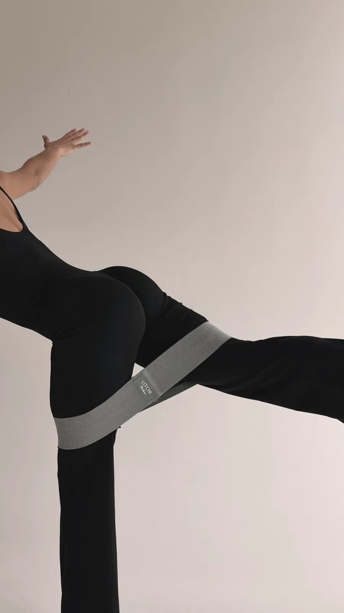
Тренировки дома
Включаешь видео и повторяешь за мной. Работаем с глубокими мышцами живота, которые не включают ни скручивания, ни планка. Плюс спина, осанка и пропорции низа и верха.
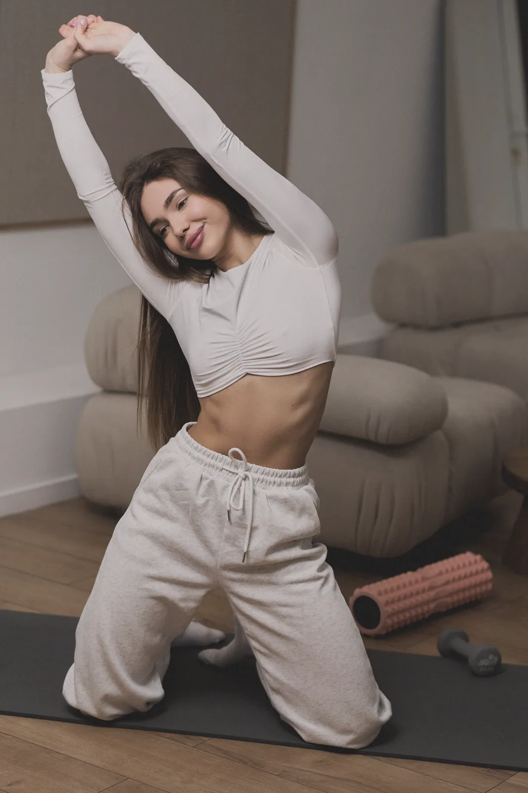
Тренировки дома, питание без срывов и чат со мной на весь поток
Присоединиться Старт потока: 24 ноября
Включаешь видео и повторяешь за мной. Работаем с глубокими мышцами живота, которые не включают ни скручивания, ни планка. Плюс спина, осанка и пропорции низа и верха.
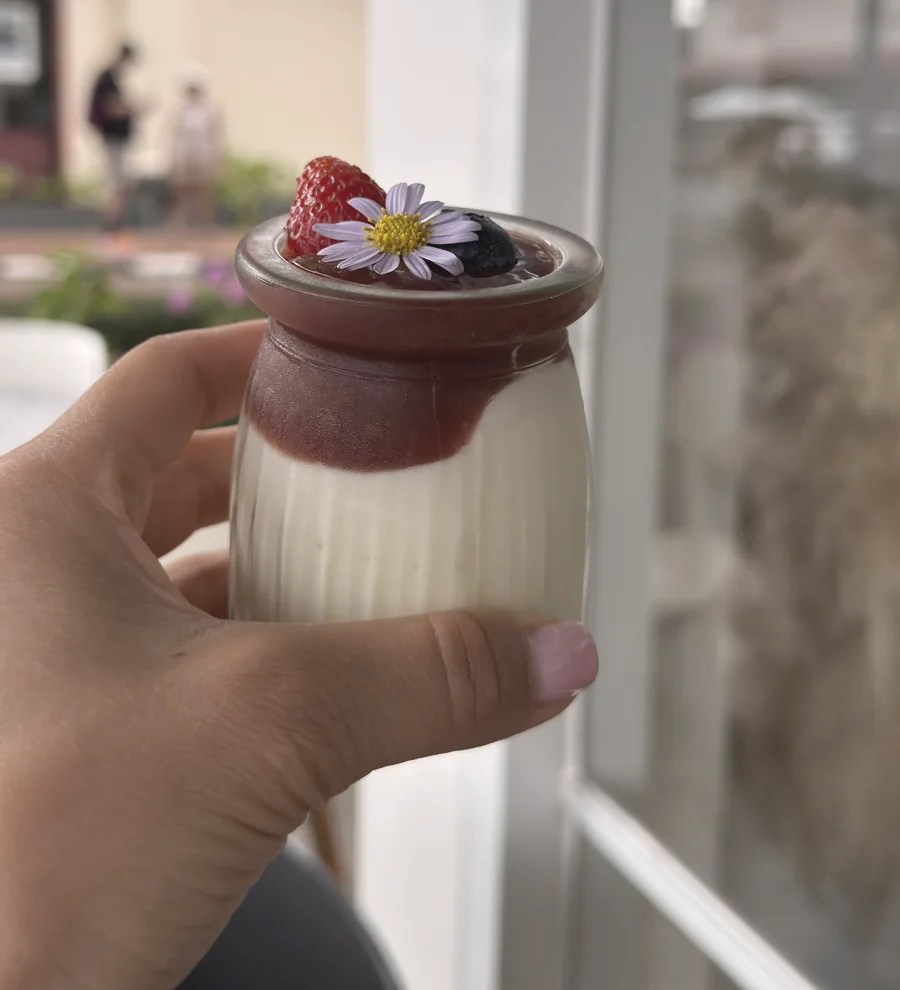
Собираешь тарелку по правилу и меряешь порции ладонью. 80% нормальной еды и 20% на вкусняшки: даже кусок пиццы можно, главное правильно вписать.
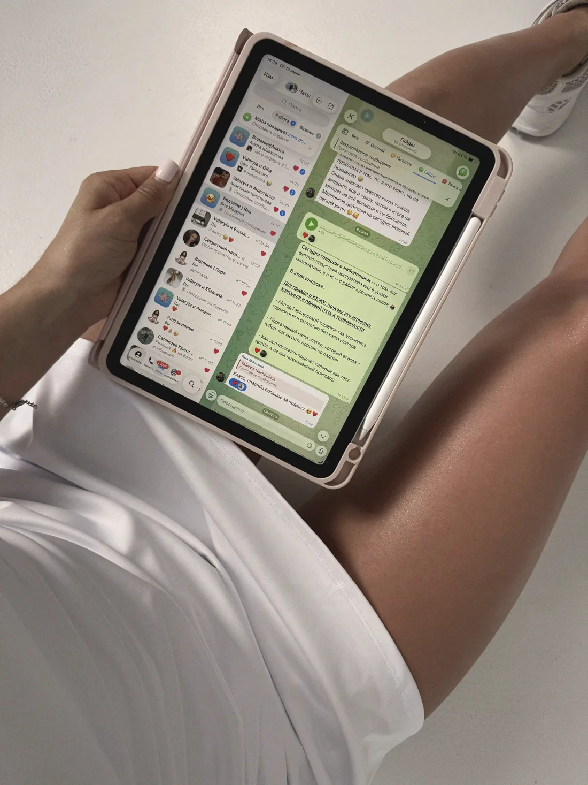
Закрытый чат на все 4 недели, где девочки идут к одной цели вместе. Раз в неделю прямой эфир: разбираю ваши вопросы и рационы. Обратная связь от меня каждые 2–3 дня.
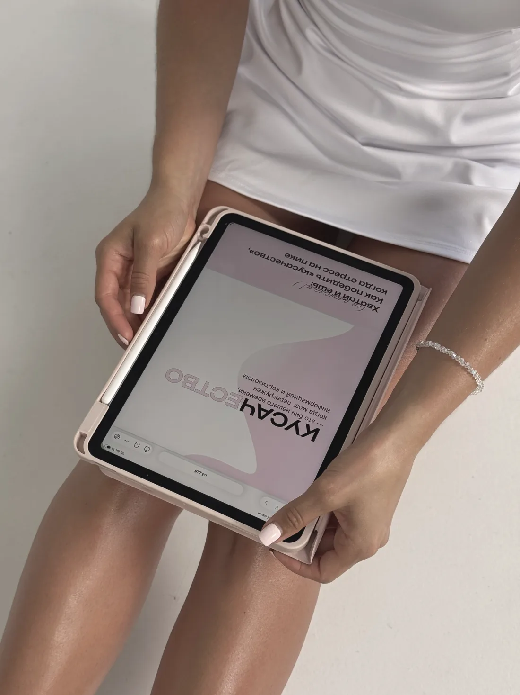
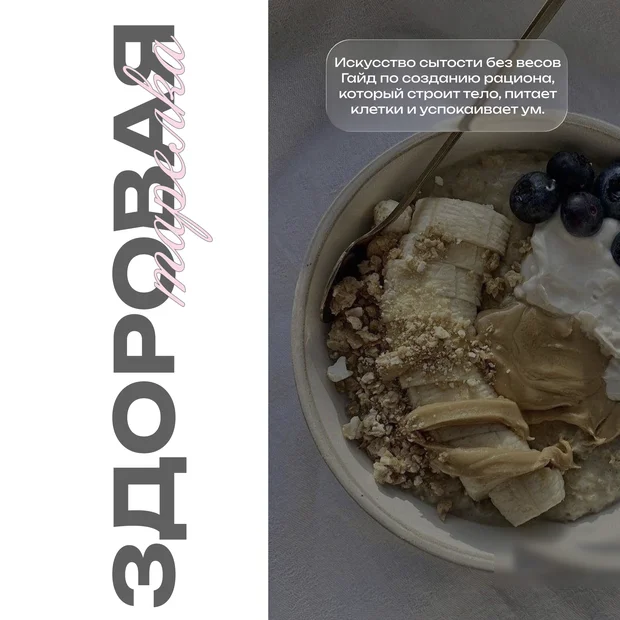
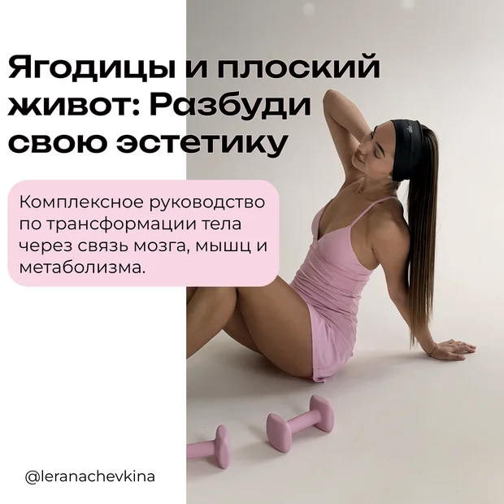
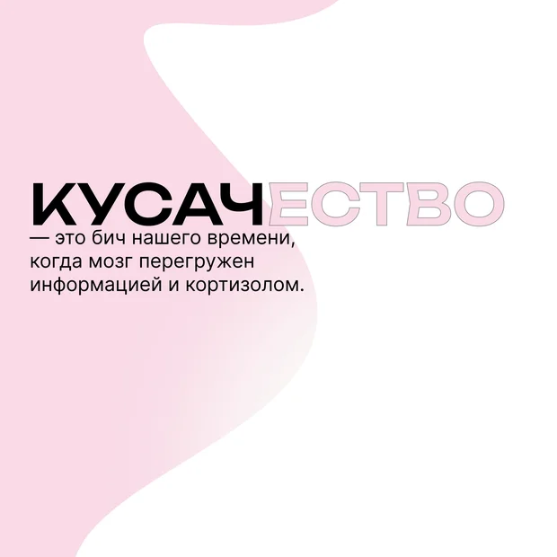
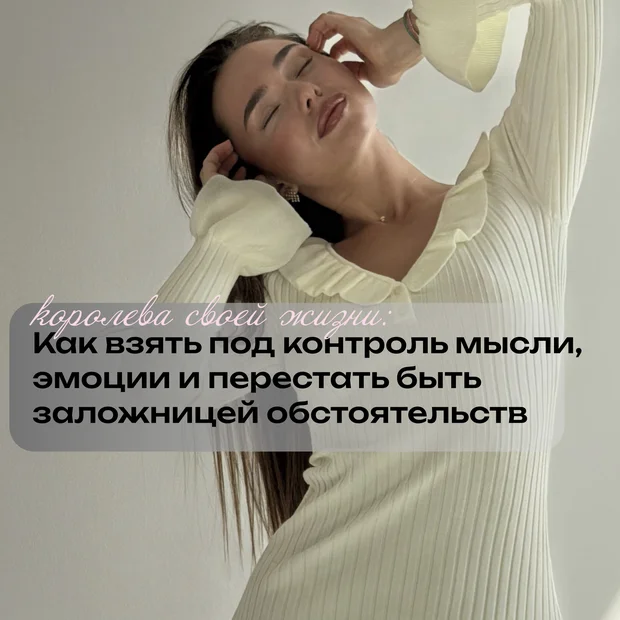
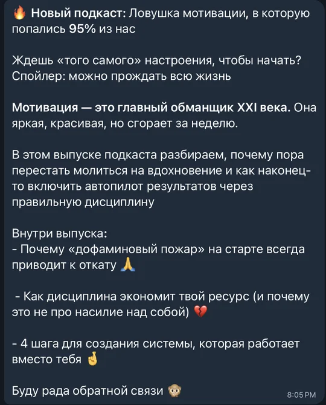
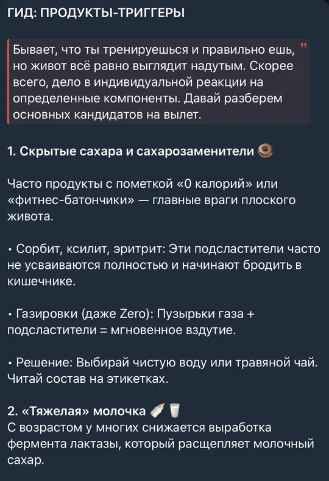
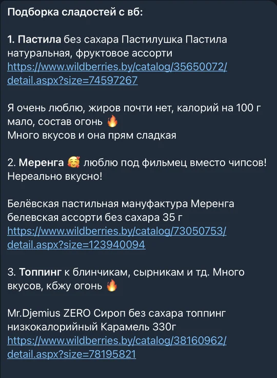
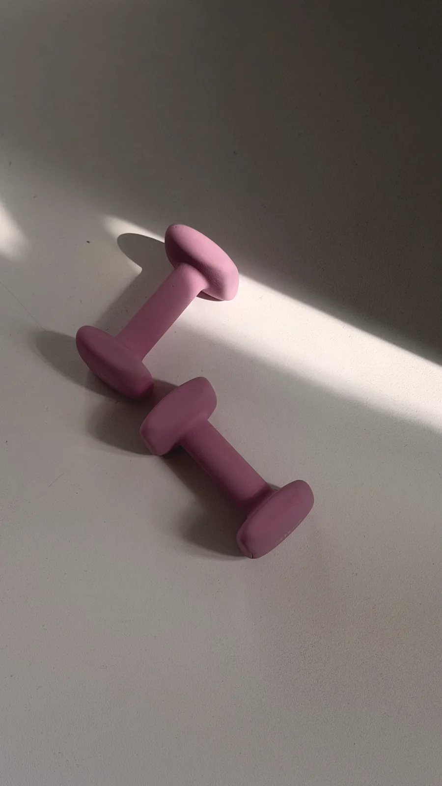
24.11
4 недели тренировок, питания и поддержки. Начинаем вместе
ПрисоединитьсяСтарт 24 ноября, длится 4 недели. Все материалы лежат в закрытом канале, а в чате мы общаемся, делимся результатами и поддерживаем друг друга. Раз в неделю эфир, обратная связь от меня каждые 2–3 дня.
Нет. Фото нужны в первую очередь тебе, чтобы видеть прогресс, даже когда весы стоят. Можешь прислать их мне в личку, а не в общий чат, или не присылать вовсе.
Не обязательно. Можно идти по правилу тарелки и мерить порции ладонью, а можно считать, если тебе так спокойнее.
Здесь нет жёстких диет и марафона на силе воли. Ты ешь нормальную еду, тренируешься дома и не остаёшься одна: я рядом весь поток и вижу, где ты буксуешь.
Гайды, подкасты и записи эфиров остаются у тебя навсегда. Возвращайся к ним сколько угодно.
Новая версия тебя за 4 недели
Тренировки дома, питание без срывов и чат со мной на весь поток
Включаешь видео и повторяешь за мной. Работаем с глубокими мышцами живота, которые не включают ни скручивания, ни планка. Плюс спина, осанка и пропорции низа и верха.
Собираешь тарелку по правилу и меряешь порции ладонью. 80% нормальной еды и 20% на вкусняшки: даже кусок пиццы можно, главное правильно вписать.
Закрытый чат на все 4 недели, где девочки идут к одной цели вместе. Раз в неделю прямой эфир: разбираю ваши вопросы и рационы. Обратная связь от меня каждые 2–3 дня.
4 недели тренировок, питания и поддержки. Начинаем вместе
ПрисоединитьсяСтарт 24 ноября, длится 4 недели. Все материалы лежат в закрытом канале, а в чате мы общаемся, делимся результатами и поддерживаем друг друга. Раз в неделю эфир, обратная связь от меня каждые 2–3 дня.
Нет. Фото нужны в первую очередь тебе, чтобы видеть прогресс, даже когда весы стоят. Можешь прислать их мне в личку, а не в общий чат, или не присылать вовсе.
Не обязательно. Можно идти по правилу тарелки и мерить порции ладонью, а можно считать, если тебе так спокойнее.
Здесь нет жёстких диет и марафона на силе воли. Ты ешь нормальную еду, тренируешься дома и не остаёшься одна: я рядом весь поток и вижу, где ты буксуешь.
Гайды, подкасты и записи эфиров остаются у тебя навсегда. Возвращайся к ним сколько угодно.